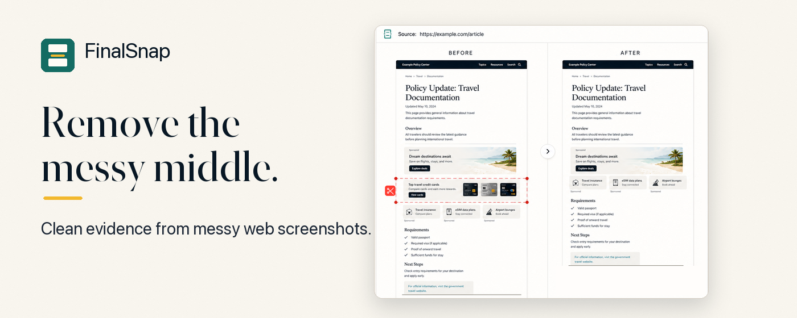
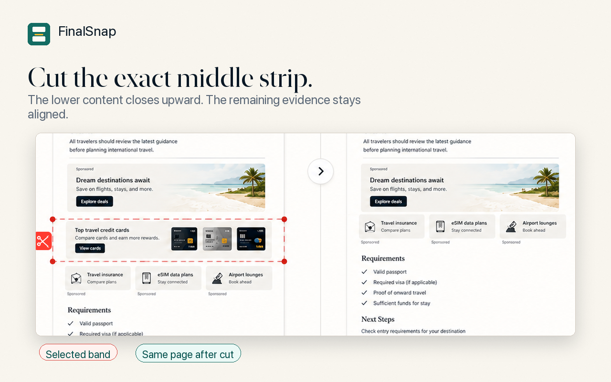

1
Cut Middle
Remove ads, repeated blocks, empty gaps, unrelated sections, or oversized page bands without opening a design editor.
FinalSnap turns long webpage screenshots into clean evidence: cut irrelevant middle bands, reconnect the page, erase visual noise, and export a polished PDF or image.

Most screenshot tools stop after capture. FinalSnap focuses on the work that usually happens afterward: removing visual clutter and turning a raw long screenshot into something easier to review.
Remove ads, repeated blocks, empty gaps, unrelated sections, or oversized page bands without opening a design editor.
Crop edges, erase small distractions, and add source context only when it helps the evidence.
Export clean PDF or image records for immigration, legal, compliance, research, and professional documentation.

A long screenshot often contains the proof you need plus content that makes the record harder to read. FinalSnap keeps the useful evidence and removes the messy middle.
FinalSnap is designed so screenshot image editing happens locally in your browser. Screenshot image data is not uploaded to FinalSnap servers by the extension.